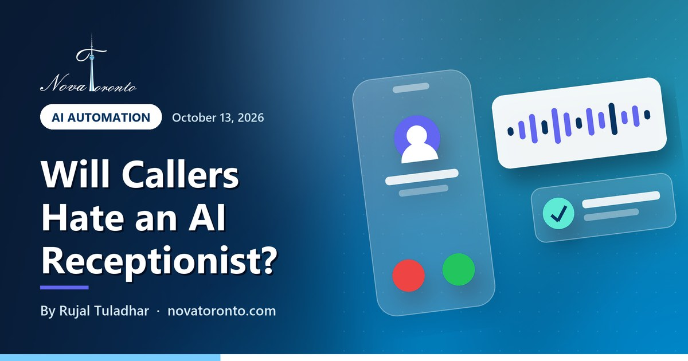

Will customers hate an AI receptionist? What makes callers stay
Published October 15, 2026 • By Rujal Tuladhar

You have probably hung up on a phone robot yourself: the menu that never offers the option you need, the voice that will not let you speak to a person, the third "Sorry, I didn't catch that." So when someone suggests an AI receptionist for your clinic, salon or trades business, the worry is fair. Will it chase customers away?
It can. It also does not have to. Whether callers stay comes down to a handful of design choices, most of which you make once at setup. This post is about those choices and the caller's experience, not about cost.
Say it is AI
Canada's voluntary AI code asks that human-like systems be clearly identified
Easy exit to a person
A transfer rule for "I want a human" should be the first one you write
Finish the job
Book, reschedule or take a message, not just answer questions
26.3% of Toronto
Share who predominantly speak a non-official language at home (2021 Census)
Recording needs notice
The OPC says callers must be told a call is recorded, and why
Will customers hate an AI receptionist? What makes callers stay at a glance — the short version.
Tell callers it is AI in the first sentence
The fastest way to annoy someone is to let them work out halfway through the call that they are talking to software. Open with it instead: "Hi, you've reached Riverdale Physio. I'm the clinic's AI assistant. I can book or move appointments, or put you through to the front desk."
That one sentence does three jobs. It is honest, it sets expectations, and it tells the caller the way out. It also matches where Canadian policy is heading. Canada's Voluntary Code of Conduct on advanced generative AI systems asks those who manage such systems to ensure that systems that could be mistaken for humans are clearly and prominently identified as AI. The code is voluntary, but it is a sensible standard for a small business to adopt anyway.
Make it easy to reach a real person
Callers forgive a robot that hands them over quickly. They do not forgive one that traps them. Modern voice agents can pass a live call to a staff member's phone. On ElevenLabs, for example, the transfer to number tool moves the call to a set number when a condition you write in plain language is met, such as the caller explicitly asking to speak to a human. In its default conference mode on the Twilio integration, a short message can be read to your staff member first so they know who is on the line and why.
Write that rule first, and decide what happens when nobody picks up: a promised call-back within a stated time, with the caller's name and number confirmed back to them. A transfer that rings out and drops the caller is worse than no AI at all.
Short answers, one question at a time, and finish the task
Most annoying AI calls fail in the same way: long answers. A caller asking "Are you open Saturday?" wants "Yes, nine to two. Would you like to book?", not a paragraph about your services. Keep each reply to a sentence or two and ask one question at a time.
The other failure is an assistant that can talk but cannot do anything. A receptionist is useful when it closes the loop: books the appointment into your real calendar, moves an existing booking, or takes a complete message (name, number, reason, best time) and sends it to you straight away. If the AI can only say "someone will call you back", callers will feel they wasted their time.
Test it yourself before customers do. Call it from your mobile, interrupt it, mumble an address, ask for a person, and listen to the recordings.
Calls that should never stay with the AI
Some calls need a person immediately, every time. Set these as transfer rules or hard stops:
- Emergencies. A burst pipe, a gas smell, a patient in pain, anyone describing a threat to safety. If it might be life-threatening, the assistant should tell the caller to hang up and dial 9-1-1, then alert you.
- Upset or confused callers. A customer complaining about a bill or a job does not want a polite robot. Transfer, or take a message flagged as urgent.
- Anything needing judgment. Quotes on unusual jobs, clinical or legal questions, refunds. The AI can collect details; a person should answer.
Write the list down, put it in the setup, and review a sample of calls each week to see whether anything slipped through.
Compared with a live answering service
A human answering service has real strengths: empathy, judgment on odd calls, and no one hangs up because they heard a synthetic voice. The question to ask any service is whether its operators can book straight into your calendar or only take messages; if it is messages only, the customer still waits for you.
An AI receptionist answers every call at once, at 2 a.m. as readily as 2 p.m., and can book directly if it is connected to your scheduling system. It is weaker on unusual calls and emotional ones. Many small businesses get the best of both: the AI handles bookings, hours and directions, and anything outside that goes to a person, whether that is your own staff or an answering service.
Multilingual callers and Canadian privacy rules
The GTA does not call in one language. In the 2021 Census, 26.3% of people in the Toronto area predominantly spoke a language other than English or French at home. Among them, Mandarin, Cantonese, Punjabi and Urdu were the largest groups. A voice agent that can switch to the caller's language is a real advantage, but only switch for languages you can follow up in, or the booking stalls at the next step.
On privacy, the federal law PIPEDA generally covers private-sector businesses in Ontario that handle personal information in commercial activity; Ontario has its own law for personal health information. The Office of the Privacy Commissioner's guidance on recording customer telephone calls says you must inform the caller that the call is recorded, state the purpose as clearly and narrowly as possible, and use the recording only for that purpose. If recording is not integral to the service, customers must be offered an alternative. The OPC updated that guidance on October 8, 2026 to treat voiceprints as sensitive biometric information. This is general information, not legal advice.
The bottom line
Customers do not hate AI receptionists. They hate being stuck. An assistant that says what it is, keeps answers short, books the appointment and hands over to a person the moment it should will usually beat a voicemail box that nobody checks until evening. Set the greeting, the transfer rules, the never-AI list and the recording notice carefully, then listen to real calls for the first few weeks and adjust.
Our AI receptionist service is built around those rules, and we will walk you through a test call on a free consultation. For the wider picture, read AI receptionists for small businesses, what an AI receptionist costs in 2026 and our guide for accounting firms. If you are new to all of this, our free AI course for beginners is a gentle place to start.
Disclosure: Nova Toronto is an ElevenLabs affiliate and may earn a commission if you subscribe through the next link. It costs you nothing extra. ElevenLabs is the voice platform we build our own phone assistants on; if you want to test one yourself, here is ElevenLabs.
Common questions
Do I have to tell callers they are talking to an AI?
There is no specific Ontario rule for phone assistants that we found, but Canada's Voluntary Code of Conduct on generative AI asks that systems that could be mistaken for humans be clearly identified as AI. Saying so in the greeting is honest and stops callers feeling tricked.
Can an AI receptionist transfer a call to a real person?
Yes, if it is set up to. Voice platforms such as ElevenLabs offer a transfer tool that passes the live call to a phone number when a condition you set is met, for example the caller asking for a human. Plan what happens when nobody answers.
Is it legal to record customer calls in Canada?
Generally yes, with notice. The Office of the Privacy Commissioner says organizations must tell callers a call is recorded, state the purpose, use it only for that purpose and offer an alternative if recording is not integral to the service. This is general information, not legal advice.
Which calls should an AI receptionist not handle?
Emergencies, upset or confused callers, and anything needing professional judgment such as unusual quotes, refunds, clinical or legal questions. Set these as immediate transfers or urgent messages, and tell anyone describing a life-threatening situation to call 9-1-1.
Want this working in your business?
Book a free 15-minute call and we'll map out which of these would actually save you time and win you customers.
Book a Free ConsultationNew to AI? Take our free 7-lesson AI course for beginners.
Sources: ISED Canada: Voluntary Code of Conduct on advanced generative AI systems • ElevenLabs docs: Transfer to number • Office of the Privacy Commissioner: Recording of customer telephone calls • Office of the Privacy Commissioner: Updated guidance on voice data when recording customer calls (October 8, 2026) • Office of the Privacy Commissioner: PIPEDA in brief • Statistics Canada: Languages other than English or French spoken at home, large urban centres (2021 Census) • Statistics Canada: Main non-official languages spoken at home in large urban centres (2021 Census)